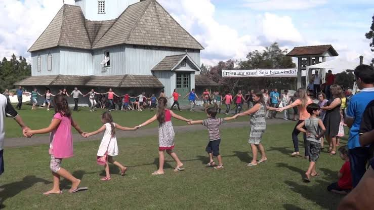

A festa foi iniciativa de Silvestre Gabriel Przybisz, que iniciou o plantio com a ideia de incentivar outros agricultores da região para a produção da fruta.

Uma das principais festividades da cidade de Mallet é a Festa Estadual do Kiwi, mais conhecida como Kiwi Fest, pois a cidade é conhecida como a Capital do Kiwi, sendo referência em muitos lugares pelo seu abundante plantio.
A festa foi iniciativa de Silvestre Gabriel Przybisz, que iniciou o plantio com a ideia de incentivar outros agricultores da região para a produção da fruta.
São Pedro é o padroeiro da cidade, pois em 1903, próximo da estação ferroviária, foi construída uma pequena capela em que São Pedro foi denominado padroeiro.
Até os dias de hoje, no dia 29 de junho, celebra-se o dia de São Pedro, com uma festa na paróquia.

É uma festa de origem ucraniana, realizada na Serra do Tigre, próxima do distrito Dorizon.
É realizada na igreja São Miguel Arcanjo, conhecida por ser a primeira igreja ucraniana construída no Brasil.

Essa festa é caracterizada por canções encenadas e interativas, sendo relacionada com a chegada da primavera e o período pascal.
